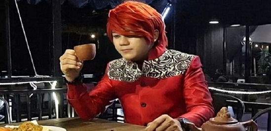

Awal Mula Pesulap Merah Bongkar Ilmu Kedukunan
Marcel Radhival atau yang dikenal dengan Pesulap Merah baru-baru ini sukses menyedot perhatian publik. Pria berusia 26 tahun tersebut sempat viral di jagat maya setelah membongkar ilmu sulap Gus Samsudin. Namun jauh sebelum itu, Marcel Radhival tahun lalu sempat membongkar terkait ilmu kedukunan. Pesulap ini menganggap bahwa ilmu yang dipraktekan dukun hanya bohong belaka. "Kalau kita ngaku ini sulap dianggap bohong, sulap itu mainan anak-anak, padahal kalau kita lihat dukun-dukun jual jimat juga mainan anak-anak, bohongan," kata Marcel dikutip dari channel YouTube TonightShowNet, Rabu (3/8/2022).
Ia mengaku tak jarang mendapat ancaman karena membongkar ilmu kedukunan. "'Kalau misalnya besok lu masih bongkar rahasia dukun, perut lu isinya paku semua'" ungkapnya memeragakan kembali ancaman yang didapatkan. "Gue tambahin 'ya udah ditunggu kalau bisa pakunya sekilo biar gue bisa jual'" balasnya atas ancaman tersebut. Awalnya, Marcel mulai menguak ilmu kedukunan karena sempat booming sebuah acara bakat televisi Indonesia yang menandingkan kemampuan para pesulap sekitar 2009 lalu. Namun ia menyebut bahwa acara ini dan sulap mulai meredup pada 2012. "Itu banyak teman-teman pesulap gue pindah ke perdukunan. Akhirnya gue cari tahu jangan-jangan dunia perdukunan beneran pakai jin, ada enggak sih? Gue pelajari semua tentang perdukunan dari mulai santet, pelet," terang Marcel Radhival. "Sampai saat ini pembuktian santet yang kiriman ada benda di dalam tubuh enggak ada pembuktiannya sampai saat ini."